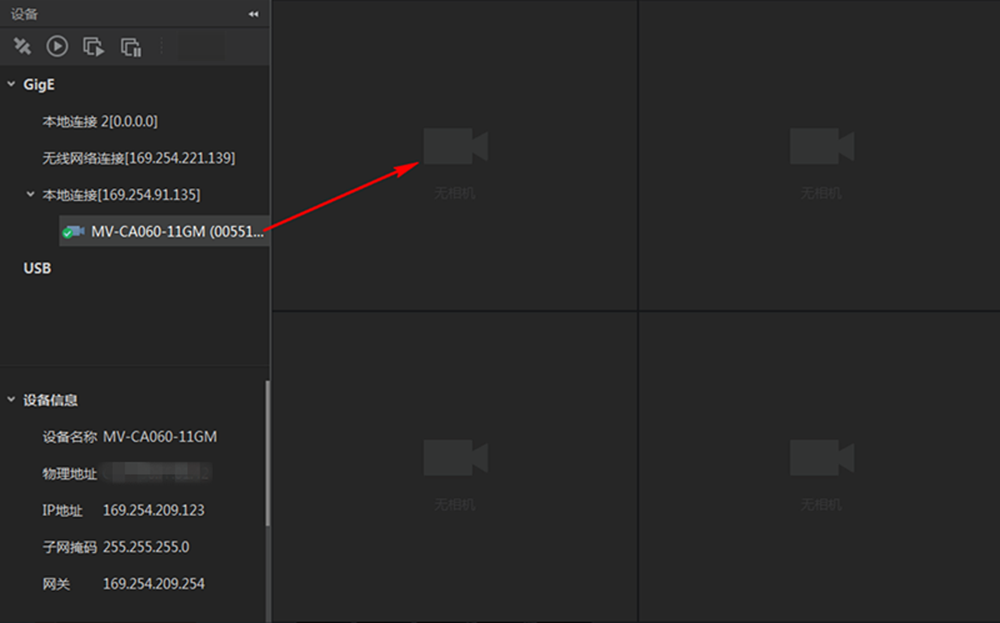
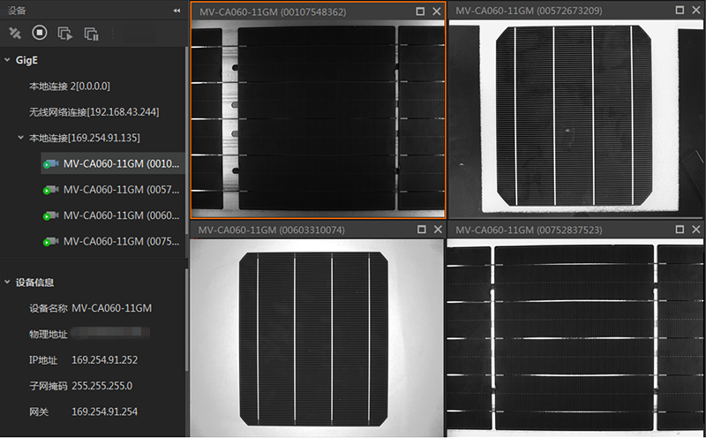
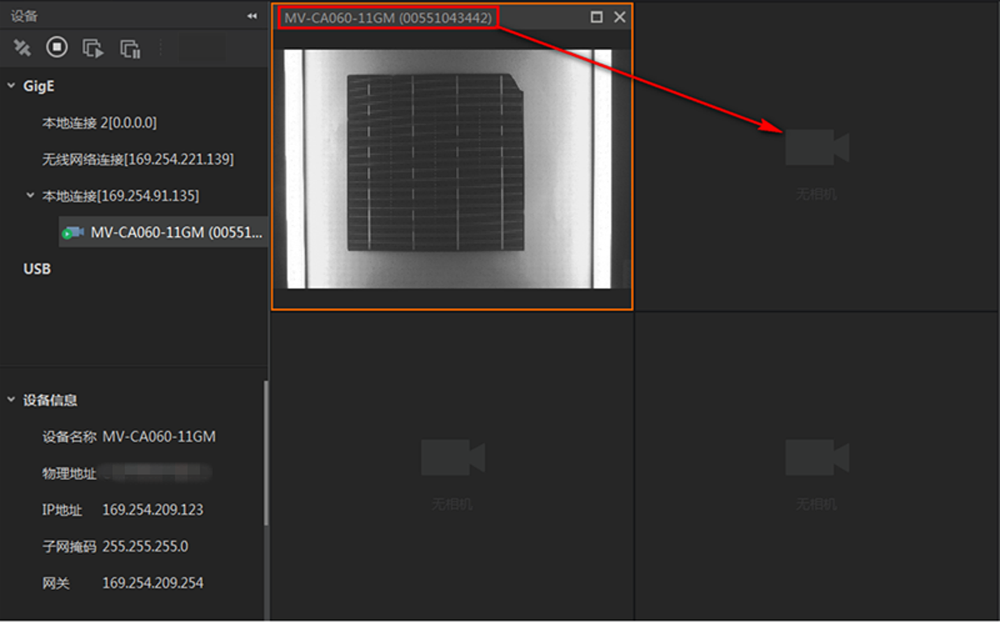

zh-CN
开启多画面预览
客户端可同时对多个相机进行多画面预览。
客户端的画面布局不是
单画面
。
说明：
如何设置客户端画面为多画面请查看
设置自定义画面布局
章节。
设备列表选中多个相机并连接。
在设备列表选中需要显示的相机，长按鼠标拖动到预览窗口，如下图所示。

图 1 拖拽相机到预览窗口
点击设备列表的对已连接相机批量开始采集，下图是四画面预览的效果。

图 2 四画面预览
可选操作：
预览窗口的相机可通过选中预览窗口上方的标题栏长按鼠标拖拽到其他预览窗口的方式更换预览窗口，如下图所示。

图 3 移动相机预览窗口
可选操作：
若仅需采集相机图像，无需预览，可通过相机预览窗口的停止预览。
说明：
停止预览后，点击可重新开始预览。
图像数据采集与预览
开启单画面预览
开启多画面预览
本地文件预览
全屏预览
设置自定义画面布局
抓图和录像
设置十字辅助线
设置网格
查看取流状态
查看水印信息
查看直方图
更多功能